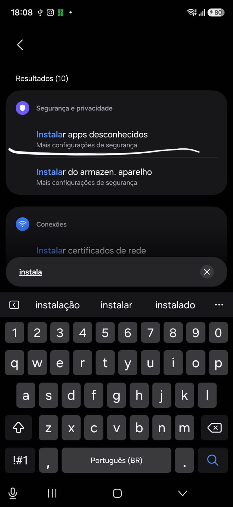
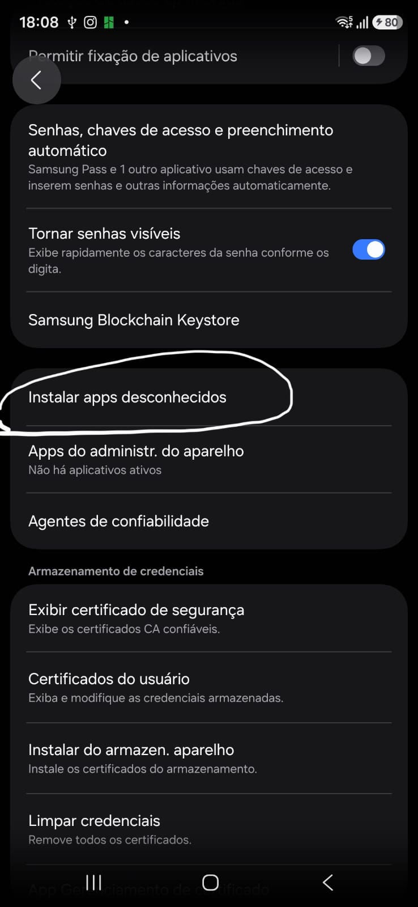
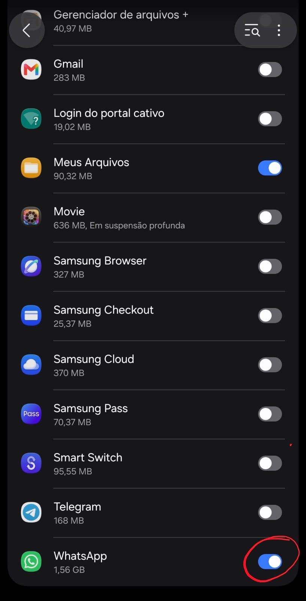
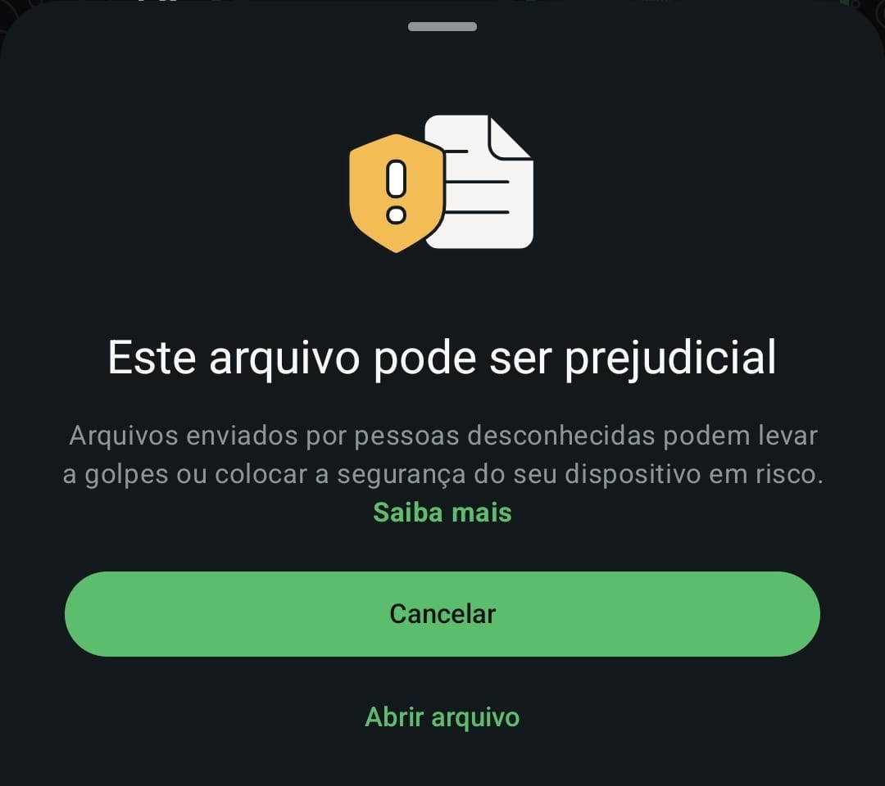
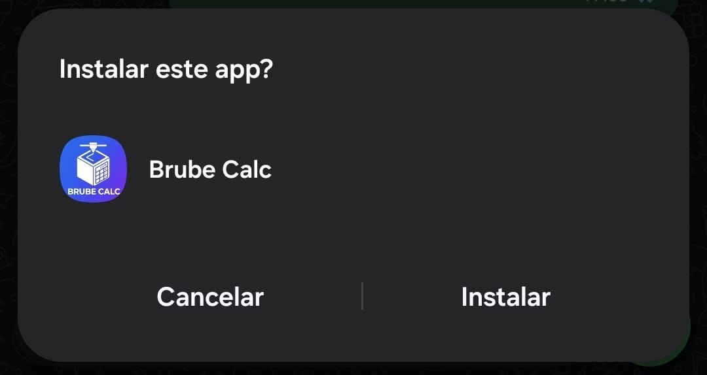
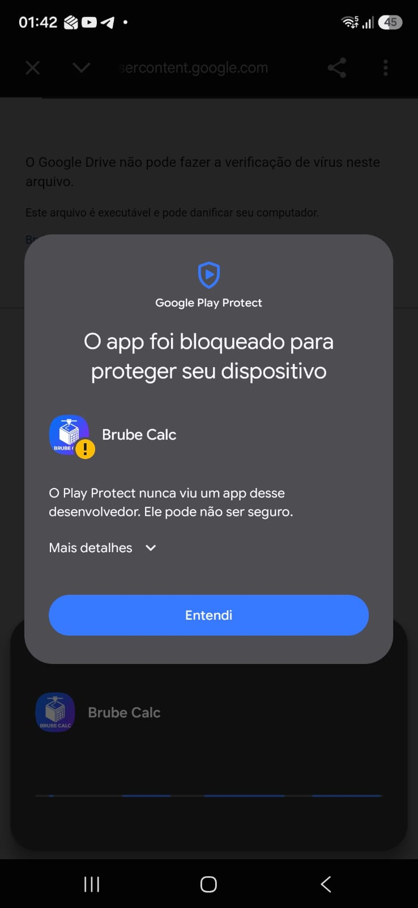
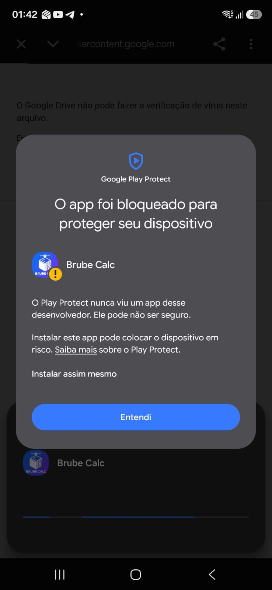
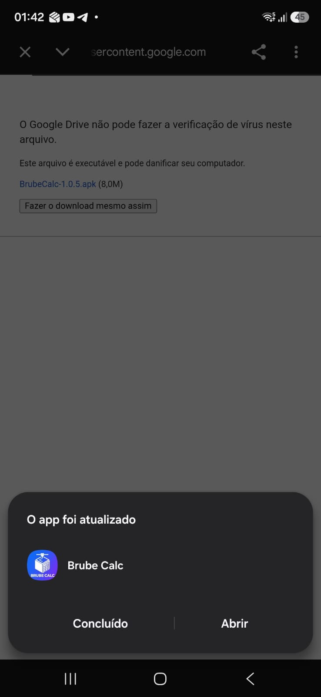
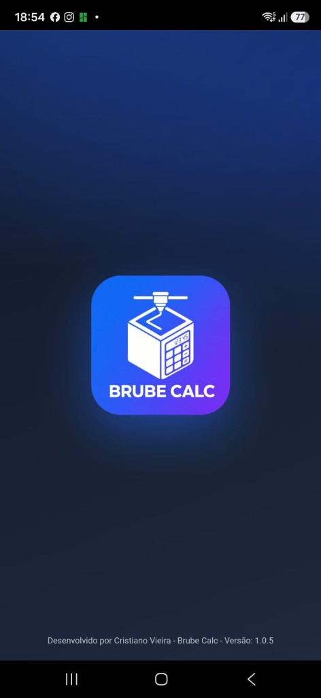
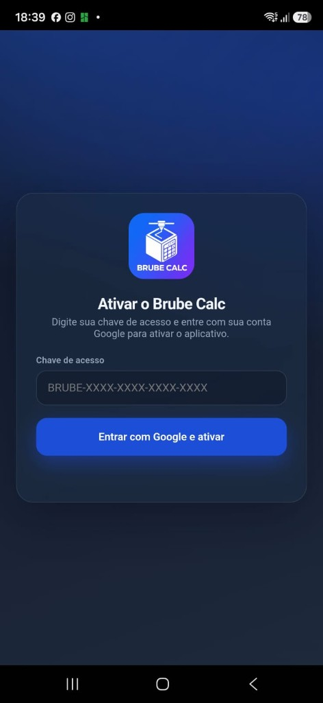

Primeira instalação
O app não está na Play Store. Libere a permissão do WhatsApp e instale o arquivo BrubeCalc-….apk.
Toque no arquivo para baixar e abrir.
Nas Configurações do celular, busque instala e toque em Instalar apps desconhecidos.

Toque em Instalar apps desconhecidos.

Ative a chave do WhatsApp.

Se o WhatsApp avisar, toque em Abrir arquivo.

Escolha Instalador do pacote → Só uma vez.
Toque em Instalar.

Toque em Mais detalhes.


Toque em Abrir.


Na primeira abertura, o Brube Calc pede a Chave de acesso. Digite a chave enviada pela Equipe do Brube Calc (com os hífens) e toque em Entrar com Google e ativar.
